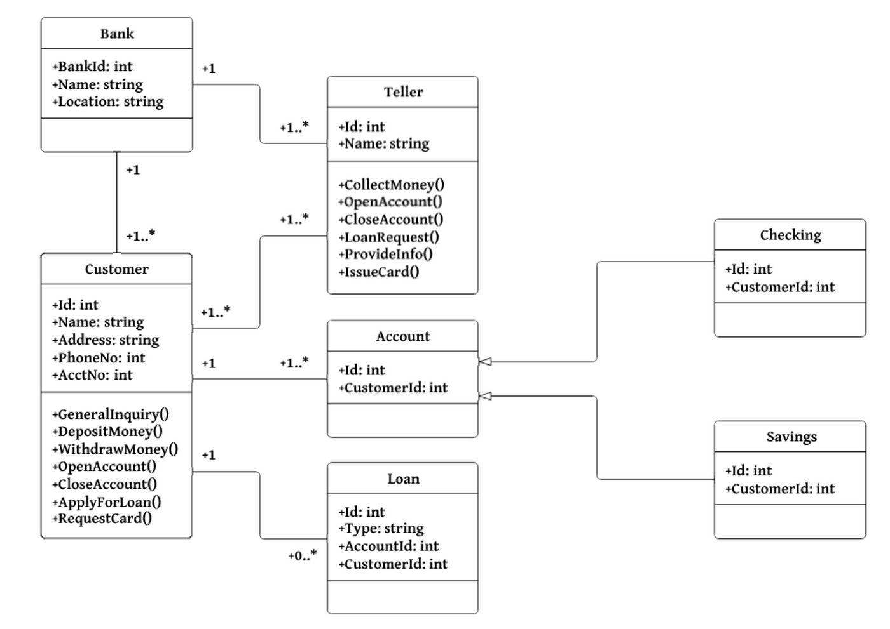
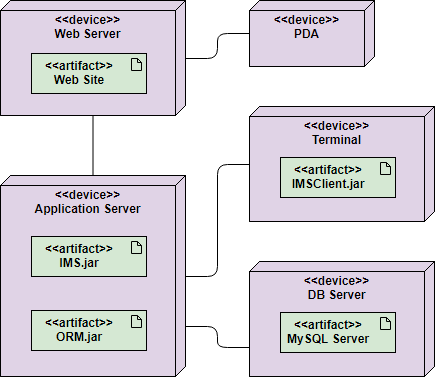
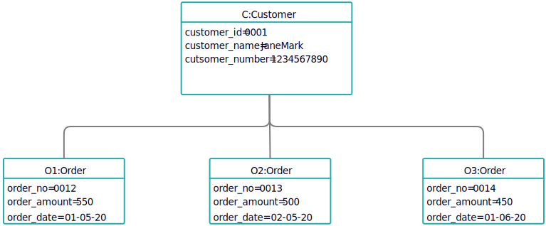
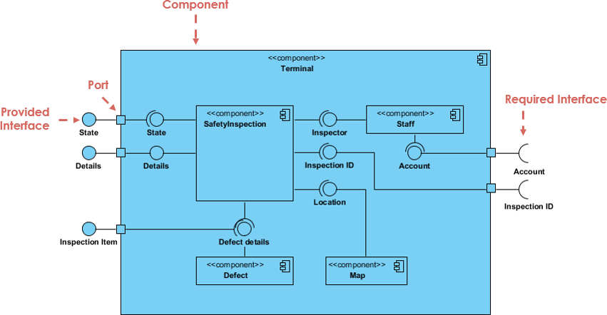
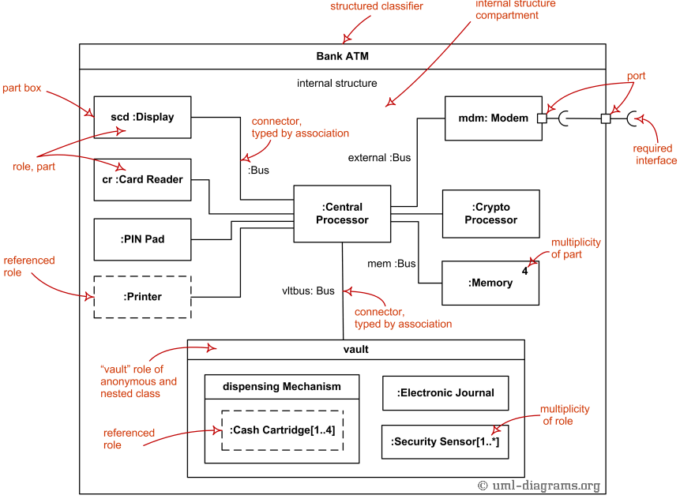

2. Class diagrammid: UML-is on klassidiagrammid üks kuuest struktuuriskeemi tüübist. Klassidiagrammid on objektide modelleerimisprotsessi jaoks põhilised ja modelleerivad süsteemi staatilist struktuuri. Olenevalt süsteemi keerukusest saab terve süsteemi modelleerimiseks kasutada ühte klassidiagrammi või süsteemi komponentide modelleerimiseks mitut klassidiagrammi. Klassiskeemid on teie süsteemi või alamsüsteemi plaanid. Klassdiagramme saate kasutada süsteemi moodustavate objektide modelleerimiseks, objektide vaheliste suhete kuvamiseks ning nende objektide tegevuse ja nende pakutavate teenuste kirjeldamiseks. Klassiskeemid on kasulikud paljudes süsteemi kavandamise etappides.

3. Deployment diagrammid: ühtse modelleerimiskeele juurutusskeem modelleerib artefaktide füüsilist juurutamist sõlmedes. Näiteks veebisaidi kirjeldamiseks näitaks juurutusskeem, millised riistvarakomponendid ("sõlmed") on olemas (nt veebiserver, rakendusserver ja andmebaasiserver), millistel tarkvarakomponentidel ("artefaktidel") töötavad. iga sõlm (nt veebirakendus, andmebaas) ja kuidas erinevad osad on ühendatud (nt JDBC, REST, RMI).

4. Objektide diagrammid: Objekt on klassi eksemplar konkreetsel käitusaja hetkel, millel võib olla oma olek ja andmeväärtused. Samuti on staatiline UML-i objektidiagramm klassidiagrammi eksemplar; see näitab hetkepilti süsteemi üksikasjalikust olekust teatud ajahetkel, seega hõlmab objektiskeem objekte ja nende seoseid, mida võib pidada klassidiagrammi või kommunikatsioonidiagrammi erijuhtumiks.

5. Komponentide diagrammid: UML-i komponentide diagramme kasutatakse objektorienteeritud süsteemide füüsiliste aspektide modelleerimiseks, mida kasutatakse komponendipõhiste süsteemide visualiseerimiseks, täpsustamiseks ja dokumenteerimiseks ning ka käivitatavate süsteemide koostamiseks päri- ja pöördprojekteerimise teel. Komponentide diagrammid on sisuliselt klassidiagrammid, mis keskenduvad süsteemi komponentidele, mida sageli kasutati süsteemi staatilise rakendusvaate modelleerimiseks.

6. Composite Structure diagrammid: Komposiitstruktuuri diagramm on üks uutest UML 2.0-sse lisatud artefaktidest. Komposiitstruktuuri diagramm on UML-i struktuuriskeem, mis sisaldab klasse, liideseid, pakette ja nende seoseid ning annab loogilise ülevaate kogu tarkvarasüsteemist või selle osast. See näitab struktureeritud klassifikaatori või koostöö sisemist struktuuri (sh osad ja konnektorid). Komposiitstruktuuri diagramm täidab klassidiagrammiga sarnast rolli, kuid võimaldab teil minna üksikasjalikumalt mitme klassi sisestruktuuri kirjeldamisel ja nendevahelise vastasmõju näitamisel. Saate graafiliselt kujutada siseklasse ja osi ning näidata seoseid nii klasside vahel kui ka klasside sees.
